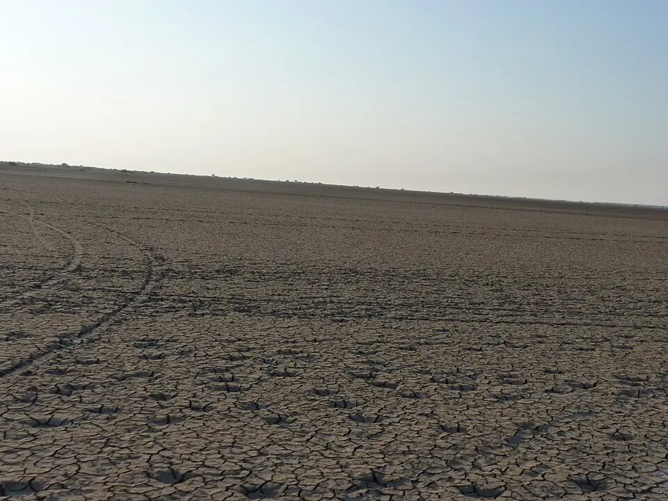

The flat landscape of the Little Rann of KutchPhoto: Wikimedia CommonsThe White Rann and the Little Rann
The Rann of Kutch is a vast, flat, low-lying area that is neither fully land nor fully sea. During the monsoon, sea water and rain water flood large parts of it. When the water dries up in the following months, it leaves behind a thick crust of salt. By winter, the Great Rann in the north turns into a white desert that seems to stretch to the horizon, this is the famous “White Rann”.
To the east lies the Little Rann of Kutch. Here, families of salt workers known as Agariyas have produced salt for generations by pumping underground brine into shallow pans and letting the sun evaporate it. Gujarat produces about three-quarters of India’s salt, most of it from Kutch and Saurashtra.
The highest point in the district is Kalo Dungar (the Black Hill), 458 metres high, from where visitors can look out over the endless white of the Great Rann.